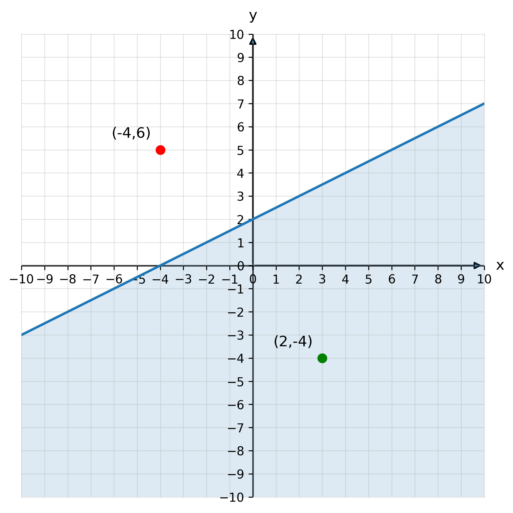
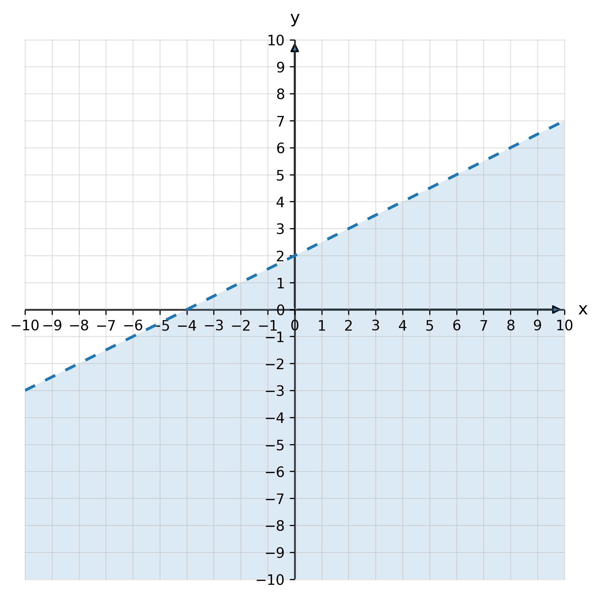
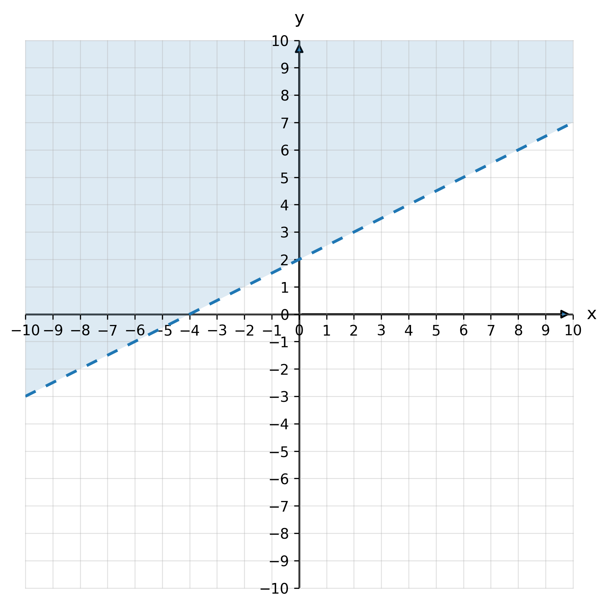
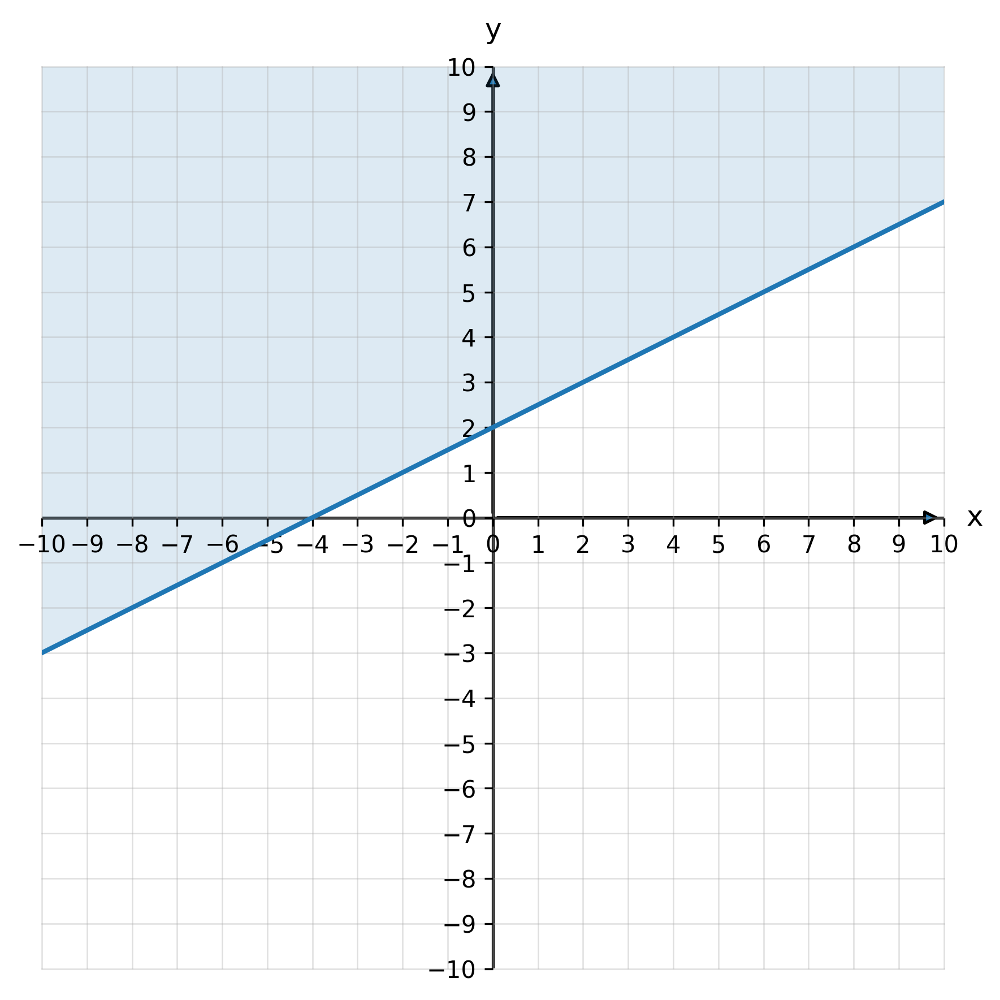
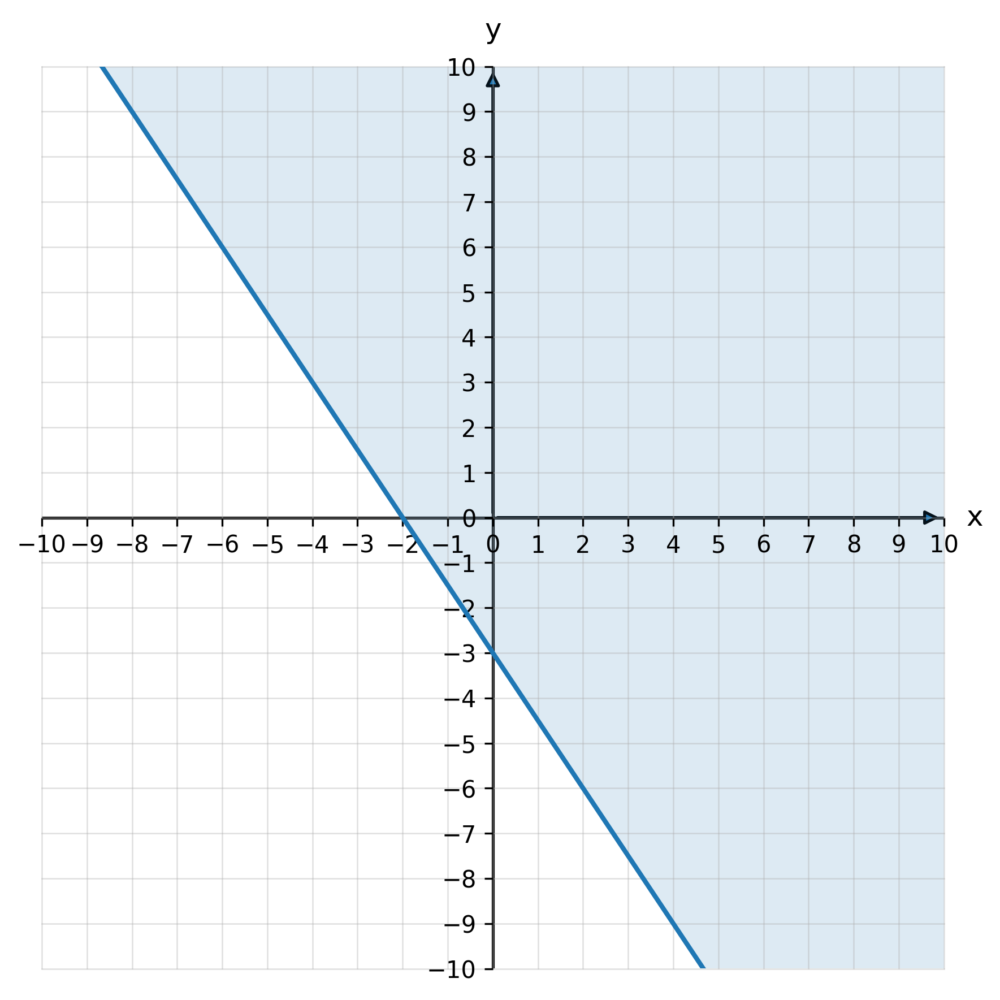
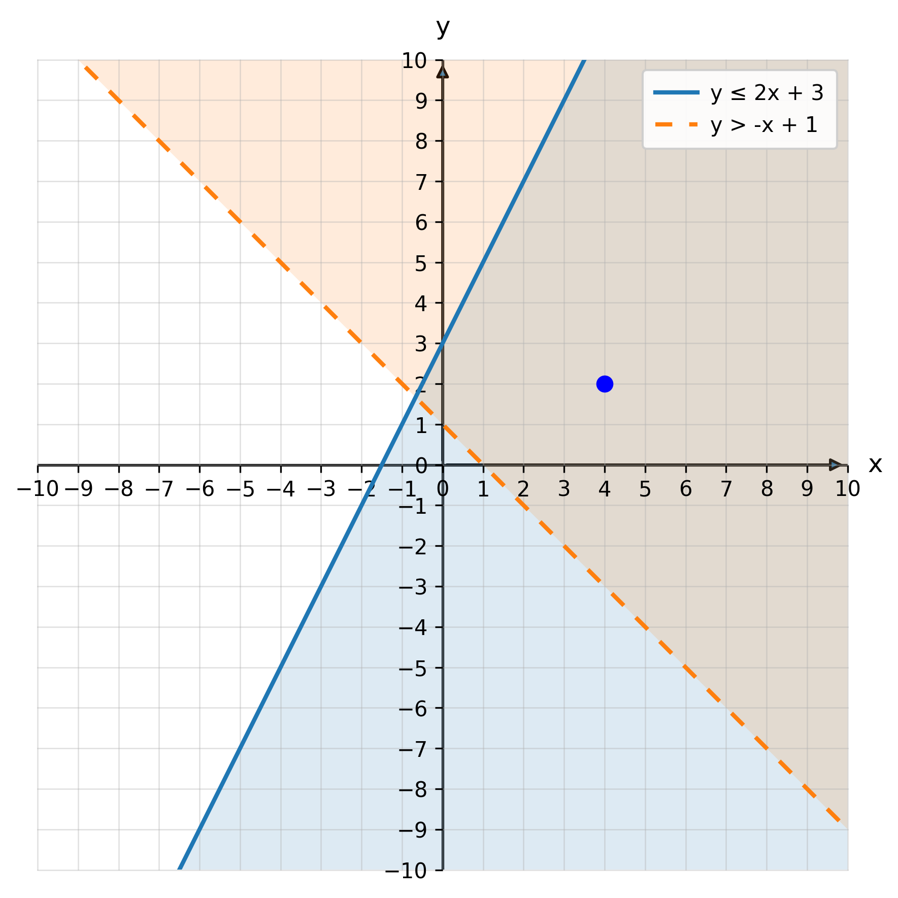
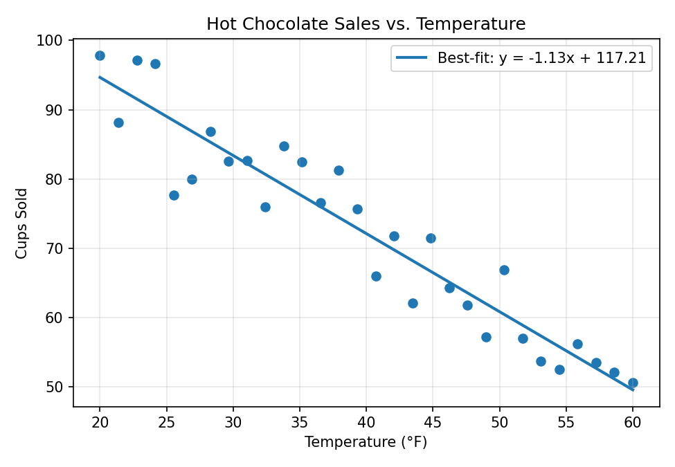
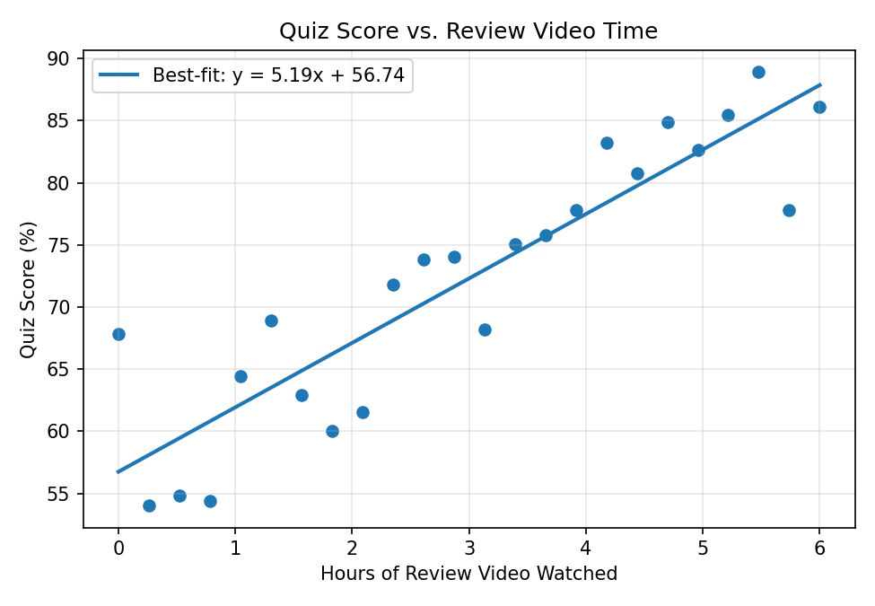
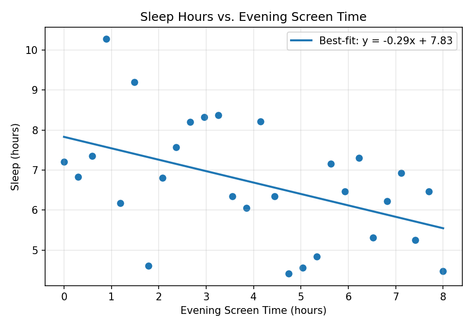
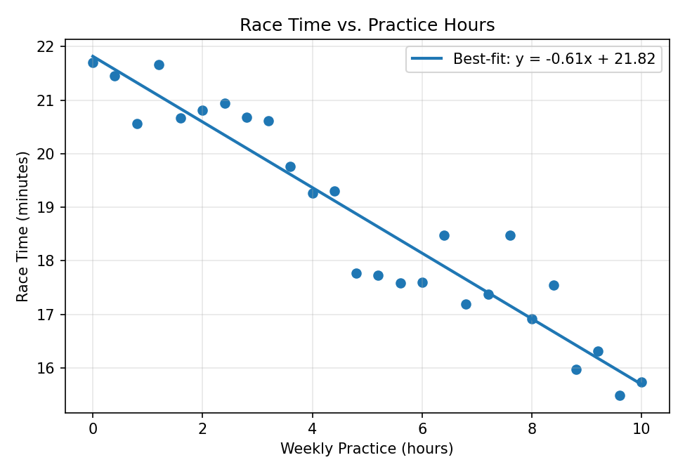

4.6 - Linear Models in the Real World
Real life is full of linear patterns. Examples include pay that rises with hours worked, temperature that drops over time, or costs that increase as you buy more. In any situation where something changes at a steady rate, you can use a linear model to describe it.
You’ve already worked with many linear models in previous lessons. They all followed the pattern \(y = mx + b\).
In this lesson, you will learn how to use these linear models to solve real-world problems involving constant rates of change.
Printable Guided Notes for this lesson — fill-in notes to print and write on.
🔥 Warm Up
- Complete the table for the function \(g(x) = 3x - 2\).
| \(x\) | \(g(x)\) |
|---|---|
| -2 | ___ |
| 0 | ___ |
| 2 | ___ |
If a car travels 150 miles at a constant rate in 3 hours, how fast is the car moving?
If Murphy made \(\$950\) working 30 hours and Katie made \(\$780\) working 25 hours, who makes the most per hour?
👥 Learn Together
4.6.1 - Solving Problems With Linear Models
Linear models always have two key pieces:
- The slope (\(m\)) shows how fast something changes.
- The y-intercept (\(b\)) shows where it starts.
Let’s look at how these appear in real situations.
Example 1: Streaming service (positive slope)
A streaming service charges \(\$2\) for every episode you rent, plus a monthly fee of \(\$7.99\). Write a function that models the total cost.
Let \(e\) = number of episodes and \(P(e)\) = total price (dollars).
First, we need to know what is changing.
- The cost increases \(\$2\) per episode - that’s the slope (\(m = 2\)).
Next, we need to know where we start.
- The minimum you pay is \(\$7.99\) - that’s the y-intercept (\(b = 7.99\)).
Putting it together:
\[ P(e) = 2e + 7.99 \]
This model shows how the total cost changes with the number of episodes rented. You can use it to find the price for any number of episodes.

\[ \begin{aligned} P(10) &= 2(10) + 7.99 \\ &= 27.99 \end{aligned} \]
It would cost \(\$27.99\) to rent 10 episodes.
Example 2: Cooling soup
A cup of soup cools from 90 °C to 60 °C in 10 minutes. Assuming the soup cools at a constant rate, write a function that models the temperature of the soup as a function of time in minutes.
Let \(t\) be the number of minutes and \(T(t)\) be the temperature of the soup after \(t\) minutes.
- The temperature decreases 30 °C in 10 minutes (\(m = -3\)).
- The soup started at 90 °C (\(b = 90\))
\[ T(t) = -3t + 90 \]

\[ T(15) = -3(15) + 90 = 45 \]
After 15 minutes, the soup will be 45 °C.
In the last example, the graph started at 0 minutes and stopped at 20 minutes. That’s because a model only makes sense for certain values.
Before 0 minutes, time would be negative, like going back in time! After 20 minutes, the soup would drop below room temperature, which isn’t realistic here.
So even though the line continues forever, we only graph the part that fits the situation.
Example 3: Taxi ride
A taxi charges \(\$3\) to start the ride and \(\$2.25\) per mile. Write a function that gives the total cost based on the number of miles traveled.
Let \(d\) be the distances in miles, and \(C(d)\) = total cost (dollars).
- The cost increases \(\$2.25\) each mile (\(m = 2.25\))
- The minimum cost is \(\$3\) (\(b = 3\))
\[ C(d) = 2.25d + 3 \]

\[ C(20) = 2.25(20) + 3 = 48 \]
A 20 mile ride will cost \(\$48\).
Example 4: Comparing services
In the last example, we found a function for the cost of a taxi ride. Now suppose a ride-sharing service charges no minimum fee but \(\$3.75\) per mile.
After how many miles would it make more sense to take the taxi instead?
Let’s write a model for the ride-sharing cost.
Let \(d\) = distance traveled (miles) and \(R(d)\) = ride-share cost (dollars).
- Rate: $3.75 per mile → \(m = 3.75\)
- No minimum fee → \(b = 0\)
\[ R(d) = 3.75d \]

By comparing the graphs, the two lines cross at about 2 miles. That means the taxi and ride-share cost the same at that distance. For trips longer than 2 miles, the taxi is cheaper.
We can use either equation.
Taxi service: \[ C(2) = 2.25(2) + 3 = 7.50 \]
Ride-share: \[ R(2) = 3.75(2) = 7.50 \]
The break-even cost is \(\$7.50\).
Example 5: Babysitting
Estrella says she charges a fixed hourly rate plus a minimum fee to babysit. She charged \(\$70\) for 5 hours and \(\$46\) for 3 hours. What is her hourly rate?
Since she charges a minimum fee, we can’t just divide money by hours. What we need is the rate of change, the slope.
\[ m = \frac{70 - 46}{5 - 3} = \frac{24}{2} = 12 \]
Her rate is \(\$12\) per hour.
Now let’s find her minimum fee (the y-intercept).
Let \(h\) be the number of hours and \(C(h)\) the total charge.
\[ C(h) = 12h + b \]
To find \(b\), substitute one of the points and solve:
\[ \begin{aligned} 70 &= 12(5) + b \\ 70 - 60 &= b \\ b &= 10 \end{aligned} \]
Her minimum fee is \(\$10\), so her model is
\[ C(h) = 12h + 10 \]
Now we can predict her charge for any number of hours.
\[ \begin{aligned} C(12) &= 12(12) + 10 \\ &= 144 + 10 \\ &= 154 \end{aligned} \]
She will charge \(\$154\) for 12 hours.
4.6.2 - Seeing Patterns in Data
In real life, data points rarely fall in a perfect line, but they often show a pattern. When that pattern looks roughly straight, we can model it with a best-fit line (or trend line).
The closer the points are to that line, the more strongly correlated the two variables are:
- Positive correlation - both variables increase together.
- Negative correlation - one increases while the other decreases.
- No correlation - no clear pattern appears.
The line helps us see these relationships and make predictions.
Example 6: Test grades
A group of 100 students took an end-of-course Algebra exam. Each student tracked how many hours they studied (to the nearest half-hour).

Even though the points don’t form a perfect line, there’s a clear positive correlation. Students who studied more hours tended to earn higher scores.
A computer can calculate a line that best fits the data:
\[ G(h) = 4.5h + 49.5 \]
- The slope (4.5) means test scores increase about 4.5 points for each extra hour studied.
- The intercept (49.5) means a student who didn’t study at all might score around 50%.
This data shows a moderate positive correlation, most points stay fairly close to the line, but not perfectly so.
We can plug in study hours (\(h\)) to estimate a score.
\[ G(7) = 4.5(7) + 49.5 = 81 \]
A student who studies for 7 hours would be predicted to score about 81%.
Example 7: Car weight and fuel economy
Car weight and fuel efficiency are also related, but in the opposite direction. There’s a strong negative correlation: heavier cars usually get fewer miles per gallon.

A best-fit line for the data is:
\[ F(w) = -0.007w + 70 \]
- The negative slope (-0.007) means that for every additional pound, fuel economy drops by about 0.007 mpg, roughly 0.7 mpg less per 100 lb.
- The intercept (70) helps the line fit the trend but doesn’t represent a real car.
Here, the points stay very close to the line, showing a much stronger correlation than the test score data. As weight increases, mpg decreases in a nearly straight-line pattern.
\[ \begin{aligned} F(3450) &= -0.007(3450) + 70 \\ &\approx 45.85 \end{aligned} \]
A 3450 lb car will get about 46 mpg.
✍️ Practice On Your Own
Write a Linear Model
A phone plan costs \(\$25\) per month plus \(\$0.10\) per text message.
Write a function for the total monthly cost.
Find the cost for 150 texts.
A car rental company charges \(\$60\) per day plus \(\$0.30\) per mile. Write a model for total cost and find the cost for 200 miles in one day.
A plumber charges \(\$50\) for a house call plus \(\$65\) per hour. Write an equation for total cost \(C(h)\).
The temperature was 72 °F at noon and drops steadily to 54 °F by 8 p.m. Write a function for \(T(t)\), where \(t\) is hours after noon.
A musician earns \(\$75\) per hour performing plus a \(\$100\) setup fee. Write \(E(h)\) for total earnings and find \(E(3.5)\).
Interpret the Slope and Intercept
\(C(x) = 40x + 200\) models the cost of manufacturing \(x\) items. Explain what the 40 and 200 represent.
\(T(d) = 85 - 2d\) models the temperature (°F) at \(d\) thousand feet of altitude. What do the slope and intercept tell you?
\(P(h) = 10.5h + 35\) gives total pay for a dog walker. Interpret both numbers in context.
Compare or Solve with Two Models
A gym charges \(\$30\) per month plus \(\$5\) per visit. Another gym charges no monthly fee but \(\$9\) per visit.
After how many visits will the total cost be the same?
Two printing companies charge
- Company A: \(\$12\) per poster
- Company B: \(\$80\) setup fee + \(\$8\) per poster
At what number of posters is the cost equal?
A streaming plan costs \(\$6.50\) per month plus \(\$1\) per episode. Another plan costs \(\$12\) per month and \(\$0.50\) per episode.
Which is cheaper for 15 episodes?
Real-World Trend Interpretation
For numbers 12-15, describe the trend by giving:
- the direction of the correlation (positive or negative)
- the strength of the correlation (strong or weak)
- the meaning of the slope of the best-fit line
- the meaning of the y-intercept of the best fit line
As outdoor temperature increases, the number of cups of hot chocolate sold decreases.

The more time students spend watching review videos, the higher their quiz scores.

A scatter plot shows that as screen time increases, sleep hours tend to decrease but with a lot of scatter.

running practice hours vs. race time (minutes) has a negative slope.

Challenge Problems
In Example 7, a best-fit line models fuel economy (mpg) from car weight (lb):
\[ F(w) = -0.007w + 70 \quad \text{(valid for } 2500 \le w \le 4500\text{)} \]
Predict the mpg for a car that weighs 3600 lb.
A measured 3600-lb car actually gets 51.5 mpg.
- Find the residual (actual - predicted).
- Is the point above or below the line?
A performance package adds 180 lb and the tires reduce mpg by an additional 1.3 mpg (independent of weight).
- Predict the new mpg for the 3600-lb car after this package.
What weight would be needed to reach 55 mpg (with normal tires)?
- Is that weight inside the model’s valid range? Explain.
Data entry mistake: a point appears at (4300 lb, 62 mpg).
- How would including this point likely change the slope (more negative, less negative, or flip sign)?
- Would the strength of the negative correlation get stronger or weaker? Briefly explain.
\(C(x)=25+0.10x\); for 150 texts: \(\$40\).
\(C(m)=60+0.30m\); for 200 miles: \(\$120\).
\(C(h)=50+65h\).
\(m=\dfrac{54-72}{8}=-2.25\); \(T(t)=72-2.25t\).
\(E(h)=75h+100\); \(E(3.5)=362.50\).
Slope \(40\): \(\$40\) per item (variable cost). Intercept \(200\): fixed/startup cost at \(x=0\).
Slope \(-2\): temperature drops \(2^\circ\text{F}\) per 1,000 ft. Intercept \(85\): sea-level temperature (\(d=0\)).
Slope \(10.5\): $10.50 per hour. Intercept \(35\): base fee before any hours.
\(30+5v=9v \Rightarrow v=7.5\) visits (break-even). For \(v\ge 8\), Gym A is cheaper; for \(v\le 7\), Gym B is cheaper.
\(12n=80+8n \Rightarrow n=20\) posters.
Plan 1: \(21.50**; Plan 2: **\)$19.50$ → Plan 2 is cheaper.
- Direction: Negative correlation - as temperature increases, hot chocolate sales decrease.
- Strength: Strong - points are close to the line.
- Slope meaning: Each additional \(1^\circ\text{F}\) is associated with about 1-1.5 fewer cups sold.
- Y-intercept meaning: At \(0^\circ\text{F}\) (extrapolating beyond the plotted range), the model predicts about 120 cups.
- Direction: Positive correlation - more review time, higher quiz scores.
- Strength: Moderate - visible trend with some scatter.
- Slope meaning: Each extra hour of video is associated with about a 5-6 point increase.
- Y-intercept meaning: With 0 hours, the model predicts about 55%.
- Direction: Negative correlation - more screen time, less sleep.
- Strength: Weak to moderate - lots of scatter.
- Slope meaning: Each additional hour of evening screen time is associated with about \(0.3\) fewer hours of sleep (≈18 minutes).
- Y-intercept meaning: With 0 hours of screen time, the model predicts about 8 hours of sleep.
- Direction: Negative correlation - more practice, faster (lower) race times.
- Strength: Strong - points are close to the line.
- Slope meaning: Each extra hour of weekly practice is associated with roughly a \(0.6\) minute reduction in race time.
- Y-intercept meaning: With 0 hours of practice, predicted time is about 22 minutes.